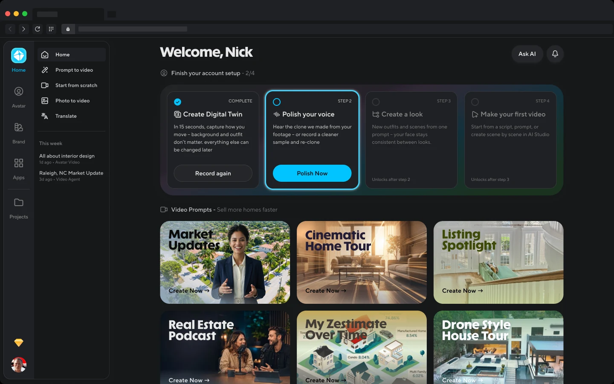
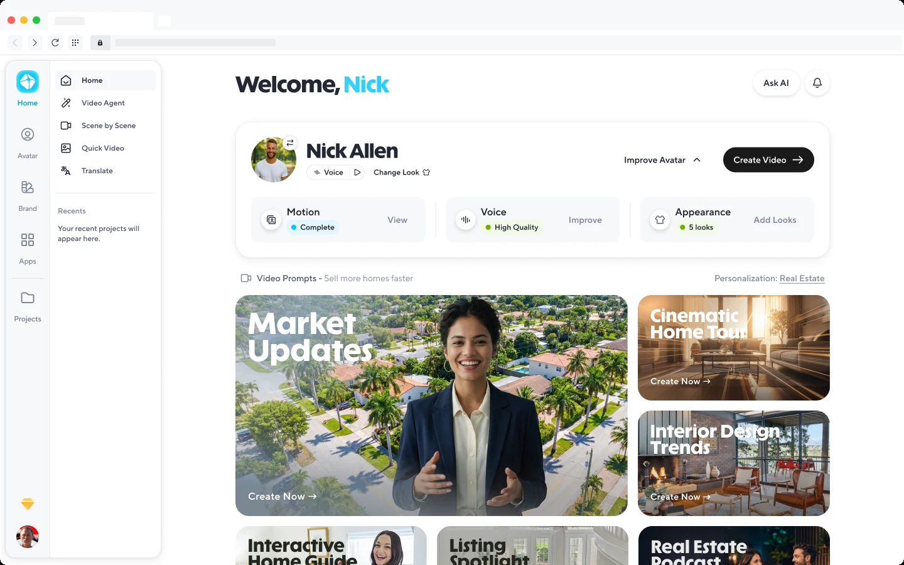
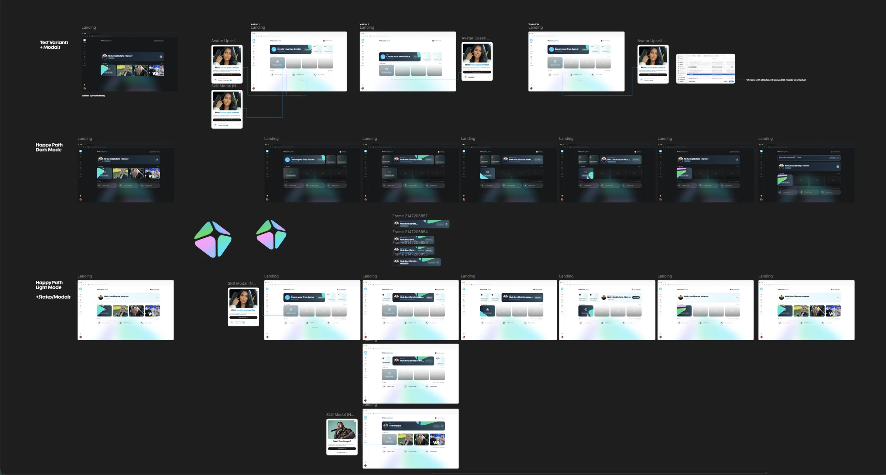
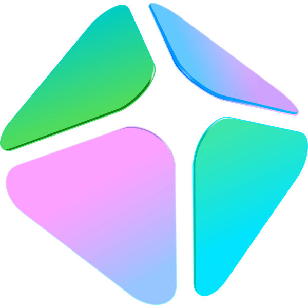

HeyGen • Home V4
Home V4
The problem
The home page is the most visited and most used page on HeyGen. It's where you kick off video creation, and it's also where you land after onboarding.
People come out of onboarding in a lot of different states, mostly having to do with how complete their avatar is. Some people have just a photo. Some have a photo and a voice. Some have recorded their motion, but their voice doesn't sound quite right.
The goal
Put your avatar, in whatever state it's in, front and center until it looks, sounds and acts like you. And keep video creation just as front and center, because that's what the page is for.
Home has six states, one for each step of getting your avatar to look, sound and act like you. Hover for arrows.
Iterations
The first design never shipped, and it's here because it shows what we walked away from. It was a prompt box. "What do you want to create?", a text field with your avatar as a chip inside it, and a grid of video workflows underneath. That's a perfectly good front door for a tool. It just assumes you already have the thing that makes HeyGen HeyGen: an avatar that looks and sounds like you. Most new users didn't.
V1, prompt-first. Never shipped.
So the page flipped around the avatar. V2 put a four-step checklist across the top: create your digital twin, polish your voice, make a look, make your first video. The current step is lit up, the later ones are locked. It made the steps impossible to miss. It also looked like a setup wizard, and it treated your avatar as homework.

V2, the checklist. This is what went live first, straight from the legacy home page.
V3 made the avatar a person instead of a progress bar. A card with your face and your name, your motion, voice and appearance as three tiles, each with its own next step, and Create Video sitting right there. It borrowed heavily from the Avatars management page, which turned out to be the problem: it read as a settings screen, not a home.

V3, the avatar card. Right idea, wrong room.
V4 kept V3's idea and changed the mood. Your avatar is the hero of the page in whatever state it's in, with one status line and one next step instead of three tiles. Create video is the first thing in your recents. And the page finally got the round of visual and motion polish that the next section is about.
States, motion, polish

Every state Home can be in, laid out in one place. The prism started here.
This is where the idea came from. Laying out every state side by side made one thing obvious: the biggest job of the page was calling attention to the one thing you should do next. In steady state that's Create video. During onboarding it's whatever step you're on. So instead of decorating the page, we gave it a pointer: the HeyGen prism, rebuilt as a small glass pyramid that orbits the button you're supposed to press, and freezes when you get there.
It started as a PNG of the logo drifting behind the Create tile, and it ended up a 3D object built out of nothing but CSS and inline SVG. Here's the whole trip. Everything in the strip is live.

Seven steps from a flat PNG to a glass pyramid in motion. Hover the last one.
Every one of these parameters is tunable, and the mistakes are more fun to see than to read about. So I built a place to play with it.
Results
More people finished making an avatar of themselves, more of them paid, and more of them downloaded a video. Which is the whole point of the page.
Shipped to production
The live home page, from first visit to steady state.